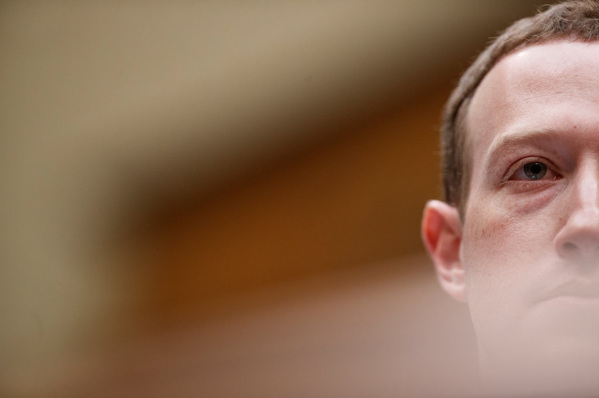

Mark Zuckerberg Defends Facebook as Furor Over Its Tactics Grows
On Thursday, Mark Zuckerberg, Facebooks chief executive and chairman, held a conference call with reporters to discuss how the social network manages problematic posts and its community standards. The call quickly went sideways. For more than an hour, the 34-year-old billionaire instead fielded questions about how he and his No. 2, Sheryl Sandberg, obfuscated problems such as Russian interference on Facebook and how the company had gone on the attack against rivals and critics. In response, Mr. Zuckerberg — at times defiant and at times conciliatory — defended the social network, Ms. Sandberg and his own record. The reality of running a company of more than 10,000 people is that you are not going to know everything thats going on, he said at one point.
Yet even as Mr. Zuckerberg was making his case, a furor against his company was gathering momentum. In Washington, Republicans and Democrats threatened to restrain Facebook through competition laws and to open investigations into possible campaign finance violations. Shareholders ramped up calls to oust Mr. Zuckerberg as Facebooks chairman. And activists filed a complaint to the Federal Trade Commission about the social networks privacy policies and condemned Ms. Sandberg, the chief operating officer, for overseeing a campaign to secretly attack opponents. The outcry followed a New York Times article that raised questions on Wednesday about Facebooks tactics in dealing with disinformation and other problems on its site, as well as the way it treats competitors and opponents. Facebook cannot be trusted to regulate itself, said Representative David Cicilline of Rhode Island, the top Democrat on the House antitrust subcommittee.
This staggering report makes clear that Facebook executives will always put their massive profits ahead of the interests of their customers. The social media giant has faced a succession of crises since 2016, when it was accused of influencing the outcome of the American presidential election in favor of Donald J. Trump. Facebook has since acknowledged that its platform was a critical conduit for Russian interference in the 2016 campaign, and it has grappled with leaks of customer data to a British political consulting firm, Cambridge Analytica. But while previous scrutiny of Facebook largely focused on its business model and how its platform promotes viral posts and ads, the latest fallout was directed specifically at Mr. Zuckerberg and Ms. Sandberg. The Times article on Wednesday described how Mr. Zuckerberg and Ms. Sandberg passed off many critical security and policy decisions in recent years and delayed responses to abuse on Facebook or played down its significance. More recently, Facebook went on the attack, employing other companies to divert attention to critics and competitors.
In one case, an opposition research firm, Definers Public Affairs, worked to discredit protesters by trying to link them to George Soros, the liberal financier. That has raised questions about the accountability of Mr. Zuckerberg and Ms. Sandberg. Mr. Zuckerberg exercises near total control of the social network because he owns 60 percent of its voting shares and is the head of the board. Ms. Sandberg is his handpicked No. 2.
On Thursday, Facebooks board said it supported Mr. Zuckerberg and Ms. Sandberg. While the board acknowledged that the two executives responded slowly to Russian interference on Facebook and that directors had pushed them to act faster, it said in a statement that to suggest they knew about Russian interference and either tried to ignore it or prevent investigations into what had happened was grossly unfair. In his conference call, Mr. Zuckerberg echoed similar sentiments. To suggest that we were not interested in knowing the truth, or to hide what we knew, is simply untrue, he said. We are in a much stronger place today than we were in 2016. Still, he acknowledged missteps, including the use of Definers Public Affairs. Mr. Zuckerberg said he terminated Facebooks relationship with Definers late on Wednesday after he learned about some of the opposition research firm’s tactics. In general, we need to go through all of our relationships and evaluate what might be more typical D.C. relationships and decide if we want to continue with them, Mr. Zuckerberg said. He declined to answer questions about personnel changes, but said Ms. Sandberg was doing great work for the company. In a statement on Facebook late Thursday, Ms. Sandberg said allegations that she stood in the way of fixing the platforms problems are also just plain wrong.
She also distanced herself from Definers and expressed support for Mr. Soros. I did not know we hired them or about the work they were doing, but I should have, Ms. Sandberg wrote. I have great respect for George Soros — and the anti-Semitic conspiracy theories against him are abhorrent. Shareholders said they were concerned about Mr. Zuckerbergs concentration of power at Facebook. Last month, several shareholders filed a joint resolution to remove him as board chairman. On Thursday, one of those shareholders, Scott M. Stringer, the comptroller of New York City, who administers the citys public pension fund, said Mr. Zuckerbergs grip over Facebook protected him from being answerable for the company’s mistakes. Renegade executives who are focused only on growth regardless of the risks — and withhold information from the board — put their company, shareholders and, in Facebooks case, our democracy in jeopardy, Mr. Stringer said. The New York City pension fund owns 4.5 million shares of Facebook. Mr. Zuckerberg said on the conference call that he was not willing to step down as chairman.
I don’t particularly think that that specific proposal is the right way to go, he said. But I am quite focused on ways to get more independence around our systems in different ways. Mr. Zuckerberg may have other trouble on his hands. Facebook, which has grown tremendously as a business in recent years, is dealing with a slowdown. And advertisers, the lifeblood of the company’s $40 billion business, are increasingly criticizing its tactics.
Up to now, whatever you said about Facebook, you could not say it was a two-faced company, said Rishad Tobaccowala, chief growth officer for the Publicis Groupe, one of the worlds biggest advertising groups. But now it is clear that it says one thing to you and does something completely different, Mr. Tobaccowala said. This is very hard if you are a marketer. In Washington, Republicans and Democrats alike blasted Facebook. Senator Rand Paul, Republican from Kentucky, said in an interview on CNN that he was concerned over Facebooks power as a monopoly.
Senator Amy Klobuchar, Democrat from Minnesota, said at a hearing on Capitol Hill that she planned to ask the Justice Department to investigate whether Facebooks hiring of opposition research firms to influence politicians violated campaign finance rules. A coalition called Freedom From Facebook, which represents public interest groups like Demand Progress and Public Citizen, also filed a complaint on Thursday with the Federal Trade Commission to investigate Facebook’s violations of users privacy. And Color of Change, a civil-rights group that has been critical of the company, blasted it for hiring Definers to discredit the group. Facebook is violating its most fundamental mission of building human connection, as well as the trust placed in it by billions of people, by advancing extremist far-right conspiracy theories that are aimed at denigrating Jews and belittling people of color, said Rashad Robinson, president of Color of Change. Lawmakers from five countries — Britain, Canada, Argentina, Ireland and Australia — called on Mr. Zuckerberg to testify at a session of what they are calling a grand committee in London on Nov. 27. Mr. Zuckerberg previously turned down the invitation. Damian Collins, the British lawmaker leading the effort, said in an interview on Thursday that The Times article appeared to contradict Mr. Zuckerbergs previous statements to regulators about his knowledge of Russias interference on the site. People at the top of the company were aware of what the Russians were doing and sought to keep it to themselves for commercial reasons, and thats a betrayal of trust, Mr. Collins said. They now need to fully account for what they knew about Russian activity on Facebook, when they knew it and why they did not report it to authorities much sooner.